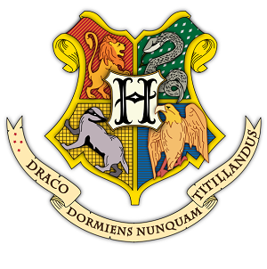
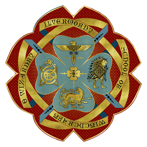
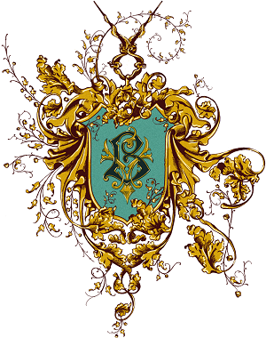
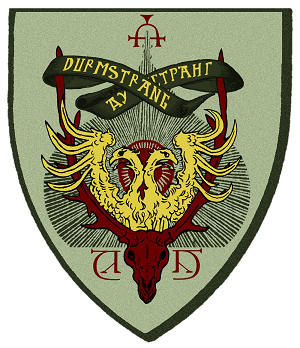
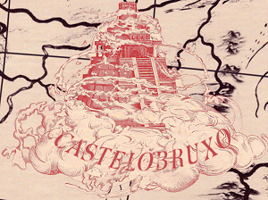
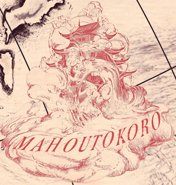

La educación en el mundo mágico
Rango y regulación
La gran mayoría de países no tienen su propia escuela mágica, los magos y brujas de estos países normalmente son educados en casa. Los cursos por correspondencia también se usan a veces como un método rentable para proporcionar instrucción mágica a brujas y magos jóvenes en países con poblaciones mágicas muy pequeñas o aisladas.
Las escuelas mágicas generalmente admiten estudiantes de cualquier país en el que tuvieran su sede, pero algunas prestan servicios en múltiples naciones o en una amplia región geográfica. Castelobruxo e Ilvermorny, por ejemplo, aceptan estudiantes de sus respectivos continentes. Hogwarts en cambio, solo inscribe estudiantes del Reino Unido e Irlanda, mientras que Durmstrang no acepta estudiantes nacidos de muggles. La escuela con menor cantidad de estudiantes es Mahoutokoro, quien solo recibe estudiantes de Japón y alrededores.
La Oficina Educativa de la Confederación Internacional de Magos es responsable de la catalogación y supervisión de las escuelas mágicas de todo el mundo.
Colegio Hogwarts de Magia y Hechicería
Es un internado mágico ubicado en Escocia, sobre unas montañas cercanas a un lago. Sus fundadores fueron Godric Gryffindor, Rowena Ravenclaw, Helga Hufflepuff y Salazar Slytherin, en cuyo honor se pusieron nombre a las diferentes casas.
Colegio Ilvermorny de Magia y Hechicería
Fue fundado entre 1620 y 1634 por la bruja irlandesa Isolt Sayre y el muggle James Steward, en el noreste de los Estados Unidos de América. Se considera como uno de los más importantes colegios mágicos del mundo y tiene fama de ser una de las instituciones más democráticas y menos elitistas de todas las grandes escuelas de magia.
Academia Mágica Beauxbatons
Se ubica en los Pirineos, al sur de Francia. El Palacio de Beauxbatons es un hermoso castillo rodeado de majestuosos jardines y fuentes creadas mágicamente fuera del paisaje montañoso. Se dice que fue financiado con oro de alquimista, ya que Nicolas Flamel fue estudiante destacado de esta Academia.
Instituto Durmstrang
Es una escuela mágica de Escandinavia, se encuentra en las regiones más septentrionales de Noruega o Suecia. Fue fundada durante la Edad Media por la gran bruja medieval Nerida Vulchanova quien se desempeñó como la primer directora de la escuela. Este Instituto es notorio por la enseñanza de Artes Oscuras y por no admitir estudiantes nacidos de muggles.
Castelobruxo
Es la escuela mágica de Brasil, se localiza dentro de la selva amazónica, en el norte de Brasil, y admite estudiantes de todo el continente sudamericano. El castillo de Castelobruxo es un imponente edificio cuadrado de roca dorada, a menudo comparado con un templo precolombino.
Escuela de magia Mahoutokoro
Es una escuela de magia japonesa, localizada en el punto más alto de la isla volcánica Minami Iwo Jima. Es la escuela con menor número de estudiantes del mundo. Se describe como un palacio adornado y primoroso, se asemeja a una pagoda o un shiro hecho de nefrita, una piedra blanca traslúcida.